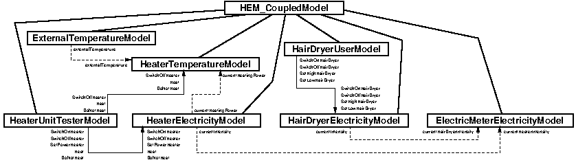

MIL models of the complete household energy manager project.
| Licence |
|---|
|
Copyright Jacques Malenfant, Sorbonne Universite. Jacques.Malenfant@lip6.fr This software is a computer program whose purpose is to implement a mock-up of household energy management system. This software is governed by the CeCILL-C license under French law and abiding by the rules of distribution of free software. You can use, modify and/ or redistribute the software under the terms of the CeCILL-C license as circulated by CEA, CNRS and INRIA at the following URL http://www.cecill.info. As a counterpart to the access to the source code and rights to copy, modify and redistribute granted by the license, users are provided only with a limited warranty and the software's author, the holder of the economic rights, and the successive licensors have only limited liability. In this respect, the user's attention is drawn to the risks associated with loading, using, modifying and/or developing or reproducing the software by the user in light of its specific status of free software, that may mean that it is complicated to manipulate, and that also therefore means that it is reserved for developers and experienced professionals having in-depth computer knowledge. Users are therefore encouraged to load and test the software's suitability as regards their requirements in conditions enabling the security of their systems and/or data to be ensured and, more generally, to use and operate it in the same conditions as regards security. The fact that you are presently reading this means that you have had knowledge of the CeCILL-C license and that you accept its terms. |
This package defines the MIL simulation models for the household energy manager project. The project serves as evaluation in a master level course on software architectures for cyber-physical control systems. In this course, a methodology proposes to specify such a system by starting from a stochastic hybrid system model to produce a modular DEVS simulator using a new implementation of this simulation software standard in Java. This first simulator implements a model-in-the-loop (MIL) kind of simulation, which is useful to assess the system before beginning the architectural design and then its development. Here, only a partial system is included (the remaining pieces must be specified by students) and the goal of the MIL simulation is not to assess the complete system (the control parts of the system are not simulated in the MIL simulation) but merely to get a simulation of the electric power consumption of appliances, the electric power production of generators and the electric circuit connected to its electric meter.
Modelling the electric consumption in the HEM project
The following describes only a partial model of the HEM project that includes only two appliances (a hair dryer and a heater) which electric power consumption will be simulated and measured by an electric meter. The next figure presents the overall HIOA model that we will progressively describe just after.
The hair dryer is modelled by its electric power consumption as the {@code HairDryerElectricity} model. The hair dryer has three functional states: {@code OFF}, when it is switched off, {@code LOW}, when it is switched on but at its lower power mode and {@code HIGH}, when it is switched on and at its higher power. The electric power consumption is represented by the variable i evolving over time and as such defined as a signal function i(t). This simple model proposes that the hair dryer has a constant power consumption in each of its functional mode (e.g., 0, 3 or 5 amperes). The model exports this variable i to be used by the electric meter model to sum up all of the power consumptions of the appliances. The initial state of the {@code HairDryerElectricity} model is {@code OFF} and its state changes upon the reception of four imported events: {@code SwitchOnHairDryer}, {@code SwitchOffHairDryer}, {@code SetHigh} and {@code SetLow}. To test this model, a user model {@code HairDryerUser} is added to emit these events (hence, this user model exports them).
The heater is more complex. It is modelled in three parts: the {@code HeaterElectricity} model simulating its electric power consumption exported as the variable i also represented as a signal i(t), the {@code HeaterTemperature} model simulating the room temperature to guide the decision of heating or not heating and the {@code ExternalTemperature} model simulating the environment as the external temperature around the house. The {@code HeaterElectricity} model is similar to the {@code HairDryerElectricity} model, but it allows to modify the power of the heater through the external event {@code SetPowerHeater(newPower)} when in the {@code HEATING} state. The power is represented by the variable p and signal p(t) that is exported towards the {@code HeaterTemperature} model. The electric power consumption is given by p/T, where T is the voltage. In the {@code OFF} state, the power is 0 while in the {@code ON} state, a minimal power Pmin makes the heater operate and in the {@code HEATING} state, it can be set to a value between 0 and the maximum power of the heater (not represented in the above model though). The {@code HeaterTemperature} model uses differential equations to represent the evolution of the temperature of the room d over time. In the state {@code NOT_HEATING}, the room temperature will evolve proportionally to the difference between the external temperature and the room temperature with a factor that represents the thermal resistance of the walls. In the state {@code HEATING}, a second contribution comes from the heater that is proportional to the difference between the heating plate and the room temperature with a factor representing the heat diffusion in the room that varies proportionally to the current power of the heater. The external temperature is a signal e(t) imported by the {@code HeaterTemperature} model and exported by the {@code ExternalTemperature} model. As for the hair dryer, a {@code HeaterUser} model is used to test the other models by emitting the exported events {@code SwitchOnHeater}, {@code SwitchOffHeater}, {@code Heat} and {@code DoNotHeat}, which are imported by the {@code HeaterElectricity} and {@code HeaterTemperature} models.
Finally, the {@code ElectricMeterElectricity} model imports the signals from the two appliances electricity models, and when importing them it assigns new internal names to the signals to distinguish them internally. It computes and exports a global intensity signal i(t) as the sum of the two imported ones.
From hybrid systems to DEVS simulation models: the hair dryer
The next step is to transform the above models into executable DEVS simulation models, which are implemented in this package. This transformation requires several implementation decisions, first the type of DEVS models to be used in each case and then how to implement them. After that, a simulation architecture describing the models to be used and how to connect them needs to be defined, after what the simulator can be constructed automatically and run.
The hair dryer simulation models appear in the package {@code fr.sorbonne_u.components.hem2025e2.equipments.hairdryer.mil}. First, the events used by the models are defined. Using the DEVS simulation library, events can be of two types: standard events simply emitted and received by models or schedulable events that can be scheduled for later execution in models (as well as emitted and received when the are exported). In this case, we decided to implement the hair dryer events as schedulable ones, hence the {@code HairDryerUser} model may then be implement as an event scheduling model (see below). To ease some verifications in the code, a common abstract superclass {@code AbstractHairDryerEvent} is created and imposed to the four concrete events {@code SwitchOnHairDryer}, {@code SwitchOffHairDryer}, {@code SetHigh} and {@code SetLow}.
Events have two main methods to be implemented. The method {@code hasPriority} is used to define a priority order over the events that will be used when more than one event occur at the same time to decide which one will be executed first. The method {@code executeOn} takes the reference to the simulation model as parameter and puts in effect the occurrence of the event on that model. It typically uses methods in the model to change the state of this model. For example, the event {@code SwitchOnHairDryer} changes the current state of the {@code HairDryerElectricity} model to the mode {@code LOW}. It also toggles a boolean in the model saying that a change in the electricity consumption of the hair dryer just happened. Other events do similar but adapted modifications on the {@code HairDryerElectricity} model.
The {@code HairDryerElectricityModel} is the DEVS equivalent to the {@code HairDryerElectricity} DEVS model. This model imports the four events that have just been implemented, which are declared with the annotation {@code ModelExternalEvents}. As it will compute and export a variable (signal), it must be implemented as a subclass of the {@code AtomicHIOA} abstract class provided by the library. To represent the three states in which the hair dryer can be, we define an enum type and use a variable {@code currentState} to keep track of the current state of the hair dryer. The different levels of electricity consumption itself are given by constants in the class. A few methods are implemented to manage the state of the simulation model. Then, the methods from the DEVS protocol must be implemented.
In the DEVS protocol (see the documentation of the library), there are four main methods to be implemented:
As {@code HairDryerElectricityModel} does not export events, its {@code output} method always return {@code null}. The model does not have its own choice for the time at which internal transitions occur; in fact, its state changes occur when the model receives external events. Hence, we decide to implement the behavior of the model the following way: when an external event is received, an immediate internal transition will be triggered, otherwise no internal transition is planned. So, the boolean {@code consumptionHasChanged} will tell the model when an external transition changing the electricity consumption has just occurred and then {@code timeAdvance} returns a 0 delay to the next internal transition otherwise it returns an infinite delay (therefore postponing the next internal transition indefinitely).
The method {@code userDefinedExternalTransition} is called when the model has just received some external events. The method {@code getStoredEventAndReset} is used to retrieve all of the just received events. Thanks to the method {@code executeOn} defined by events, we can simply call this method passing the reference to the current model as parameter. We have seen that this will change the state of the model and toggle the boolean {@code consumptionHasChanged} to trigger an immediate internal transition.
The method {@code userDefinedInternalTransition} is called when an internal transition is being executed. When it is called, the state of the model has been updated, so the method {@code getCurrentStateTime} returns the current simulation time when the internal transition occurs. For {@code HairDryerElectricityModel}, we compute the new value of the signal {@code currentIntensity} and update the time of the signal. This variable is exported by the model, and as such is marked by the annotation {@code ExportedVariable} and initialised as final by an instance of the class {@code Value}, which role is to cater for the sharing of exported and imported variables between models.
A final point on {@code HairDryerElectricityModel} concerns the initialisation of the model when the simulation begins. Two methods are defined. One is inherited from the class {@code AtomicModel}, {@code initialiseState}, and is used to initialise state variables of all atomic simulation models. The other is inherited from {@code AtomicHIOA}, {@code initialiseVariables}, is used to initialise variables.
The {@code HairDryerUserModel} serves as a test scenario for the {@code HairDryerElectricityModel}. To show how to use them, it is defined as an event scheduling mode i.e., it can schedule events in the future and its time advance will be governed by the sequence of scheduled event occurrences. It also shows how to use random number generators from the {@code common-math} library to generate delays between event occurrences. The method {@code initialiseState} randomly generates a delay to the first event, creates a {@code SwitchOnHairDryer} event and schedule it for future execution. NOte that in this initialisation method, we must manually reinitialise the model internal variables {@code nextTimeAdvance} and {@code timeOfNextEvent} to make sure that they take into account the newly scheduled event (they have been initialised by the call to the super-method but before the event was scheduled to create the necessary data structures in the model). Most of the previously seen methods that implement the DEVS protocol are predefined in the abstract class {@code AtomicES_Model} to simply execute the scheduled events and emit them if they are exported. Here, we redefine the {@code output} method to generate the next event at the time the current event is emitted towards the {@code HairDryerElectricityModel}. A method {@code generateNextEvent} is used to look at the next event to be executed (by peeking the event list) in order to generate the following event in our test scenario.
Before going any further, it is interesting to test whether the hair dryer models work properly. To perform a kind if "unit" test for the hair dryer, we must first assemble the above models under a coupled model, here defined as {@code HairDryerUnitaryCoupledModel}. A coupled model inherits from the abstract class {@code CoupledModel}. Here, we simply define the concrete class without adding anything specific. In more complex examples, this class could define a simulation report to be returned at the end of simulation runs. With this coupled model, we next define the simulation architecture to be run in the class {@code RunHairDryerUnitarySimulation}. The architecture is defined by creating descriptors for the models to be included. The is done for atomic models first and then the coupled model that will need top describe how the atomic models connect through exporting and importing events and variables. Here, no variables are exported/imported, so the coupled model need only to express the fact that the four exported events of the {@code HairDryerUserModel} (source) are imported by the {@code HairDryerElectricityModel} (sink) as the same event (when models are created by different developers with different events, the connection can perform event translations to make emitted events understandable by the importing model). The architecture is then created with the atomic and coupled model descriptors, pointing out the URI of the root model in the three of simulation models. The call to {@code constructSimulator} interprets the architecture to create the simulator instances, including the root simulators that is returned as result. The method {@code doStandAloneSimulation} is then called on the root simulator to execute a simulation run with the initial and final simulation time given as parameters.
The heater simulation models
The package {@code fr.sorbonne_u.components.hem2025e2.equipments.heater.mil} includes the simulation models for the heater. Again, the events used by the models are first defined. In this case, we decided to implement the hair dryer events as schedulable ones, hence the {@code HairDryerUser} model may then be implement as an event scheduling model (see below). To ease some verifications in the code, a common interface {@code HeaterEventI} is created and imposed to the four concrete events {@code SwitchOnHeater}, {@code SwitchOffHeater}, {@code Heat} and {@code DoNotHeat}. Contrary to the hair dryer, only the two first events are schedulable, as they represent actions made by the user. The latter two, {@code Heat} and {@code DoNotHeat}, are not meant to be emitted by users but rather by a controller that will decide upon the current temperature of the room and a target temperature set by the user when to start or stop heating. Hence, these two are simple events that will be emitted when the controller will decide to. Another interesting point here, the events {@code Heat} and {@code DoNotHeat} will be imported by both models of the heater, {@code HeaterElectricityModel} and {@code HeaterTemperatureModel}. As such, the method {@code executeOn} must take care of the type of model on which they are executed to perform the right actions on them. Otherwise, they are similar to the events defined in the hair dryer simulators.
The {@code HeaterElectricityModel} is very similar to the {@code HairDryerElectricityModel}, hence it should be self-explanatory given the above explanations. The {@code HeaterTemperatureModel} however introduces some novelty as it is using differential equations. To ease the programming of such models, the library proposes another abstract class to be inherited: {@code AtomicHIOAwithDE}. A differential equation is integrated using an integration step to move forward in time. At each step, we compute the current derivatives and then use them to compute the current values of the variables (signals) with the Euler method. Therefore, {@code AtomicHIOAwithDE} introduces new methods in the DEVS protocol to initialise the derivatives {@code initialiseDerivatives} and to compute their current values {@code computeDerivatives}. The latter is called just before calling {@code userDefinedInternalTransition}, so this method can simply use the derivatives just computed to update the variables.
The {@code HeaterTemperatureModel} also imports the events {@code Heat} and {@code DoNotHeat}, which change its state and guide the differential equation to be used at the next steps. Indeed, when such an event is received, the temperature variable should be updated immediately with the previous differential equation before changing the state and take over with the new differential equation. Because this complicates the model, in this example we have decided not to take this update into account. When an imported event is received, the state is updated and the next internal transition will simple update the variables as if the new differential equation was in force since the last internal transition. This introduces a small computational error at each state change, but of little interest to us in this example.
The {@code HeaterTemperatureModel} imports the variable external temperature which is exported by the {@code ExternalTemperatureModel} which simulates the environment. Here, the implementation of this model shows how to perform simulation scenarios that outputs variable values (or signals). First, as the variable is continuous in the hybrid systems model, in the simulation model we must discretise it using an evaluation step similar to the one used to integrate the above differential equations. Next, we must chose a mathematical model for the external temperature. We have chosen a periodic function that makes the temperature evolve from a minimal one to a maximal one at the middle of the period and then return to the minimal at the end. The idea is to model the variation of the temperature over a day, beginning with the lowest temperature usually just before sunrise in the morning. The method {@code timeAdvance} simply returns the evaluation step as the delay to the next internal transition, and {@code userDefinedInternalTransition} updates the temperature value using a cosine wave over the period and the variation between the minimal and the maximal temperatures.
As for the hair dryer, a unitary test can be constructed by defined a coupled model for the heater and then a unitary simulation architecture to be run. The only difference with the hair dryer example is that in the heater example, we have models exporting and importing a variable. So the class {@code RunHeaterUnitarySimulation} shows how bindings between exported and imported variable are made and how the coupled model must define another constructor that take these bindings into account.
The electric meter simulation model and the overall simulation
The package {@code fr.sorbonne_u.components.hem2025e2.equipments.meter.mil} defines the {@code ElectricMeterElectricityModel}. Similar to the {@code ExternalTemperatureModel}, this model computes the global electric power consumption as the sum of the appliances consumptions. It first imports the two variables from the two other electricity models, hence it defines imported variables marked by the annotation {@code ImportedVariable}. Note that contrary to exported variables, imported ones are neither final nor initialised. In fact, when constructing the simulators, they will be set to the reference on the instance of {@code Value} put in the source (exporting) model. The variable {@code currentIntensity} is marked as internal, as it is a signal neither exported nor imported. The idea is that this value will be read by the embedding component to provide simulated sensor values when the electric meter will be requested to do so.
The overall simulator providing a kind of "integration" test is defined in the package {@code fr.sorbonne_u.components.hem2025e2}. Again, a coupled model meant to gather all of the models into one architecture is defined by the class {@code GlobalCoupledModel}. The architecture itself is created and instantiated in the class {@code RunGlobalSimulation}. This class reuses much of what we programmed in the previous unitary test classes, adding the electric meter atomic model. Interestingly, it shows how we can bind variables exported by models to variables with a different name in importing models. For example, the source variable {@code currentIntensity} in the {@code HairDryerElectricityModel} is bound to the variable {@code currentHairDryerIntensity} in the {@code ElectricMeterElectricityModel}.